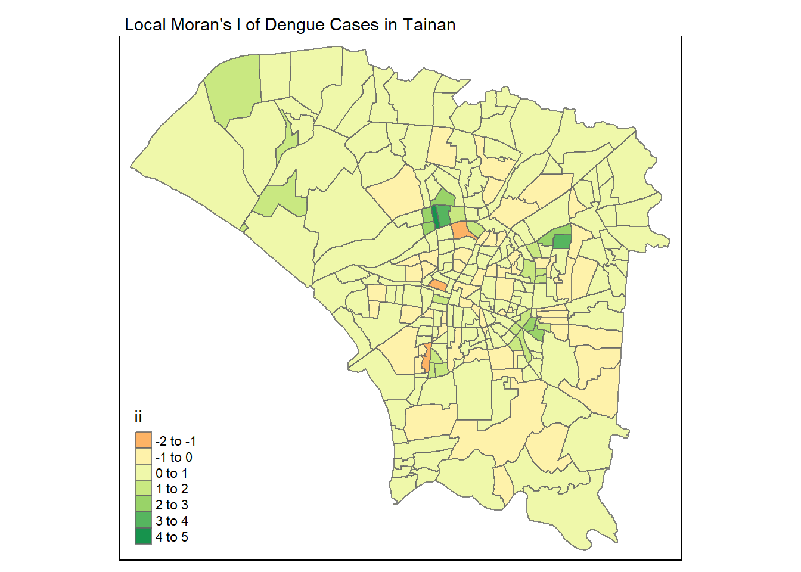
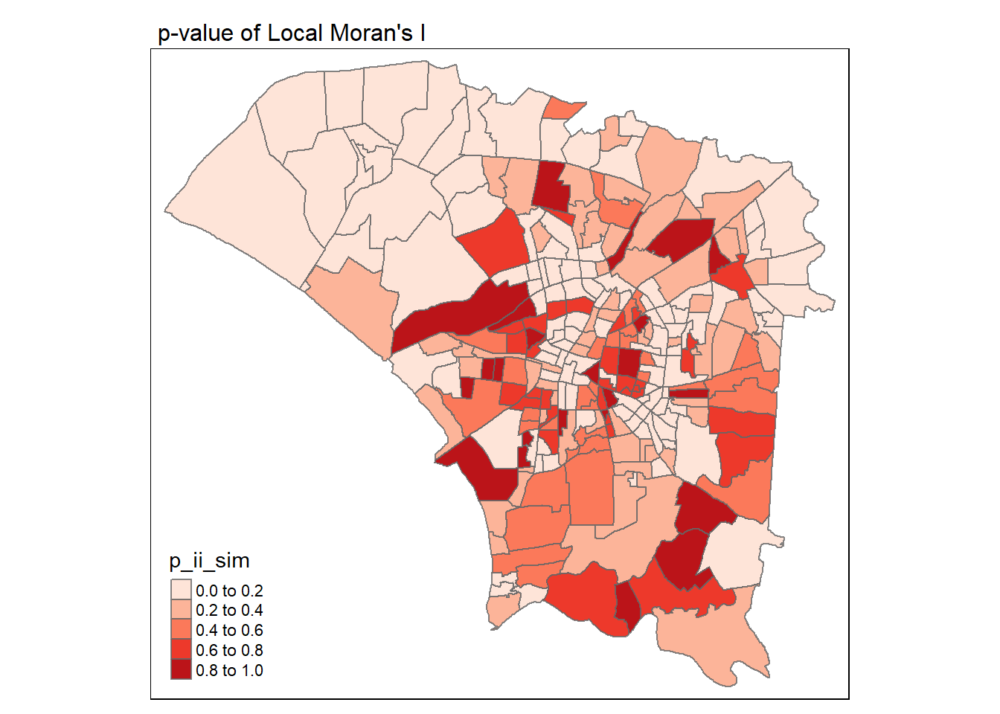
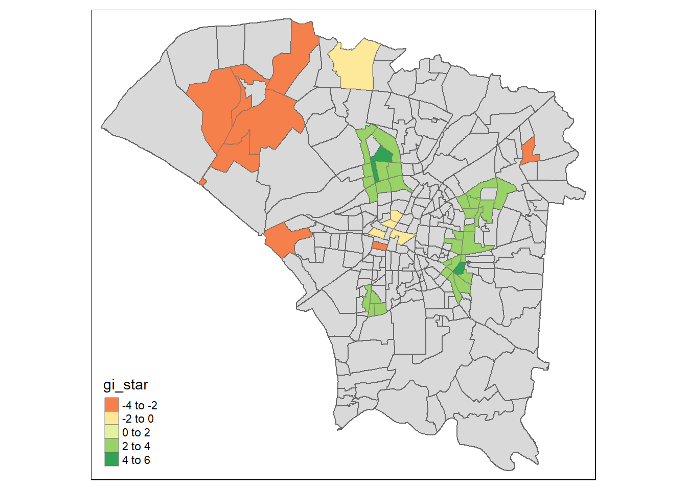
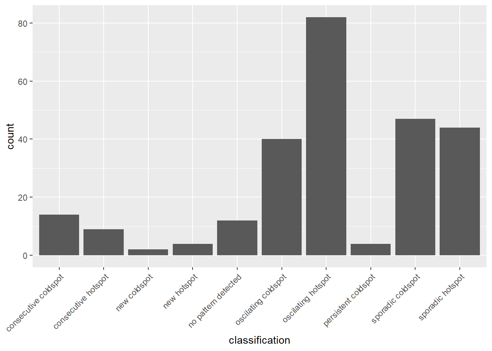

Reading layer `TAINAN_VILLAGE' from data source
`C:\fathimak2020\IS415-GAA\Take-home_Ex\Take-home_Ex02\data\geospatial'
using driver `ESRI Shapefile'
Simple feature collection with 649 features and 10 fields
Geometry type: POLYGON
Dimension: XY
Bounding box: xmin: 120.0269 ymin: 22.88751 xmax: 120.6563 ymax: 23.41374
Geodetic CRS: TWD97Take-home Exercise 2[ANALYSIS]: Application of Spatial and Spatio-temporal Analysis Methods to Discover the Distribution of Dengue Fever in Tainan City, Taiwan
2.4 Global Measures of Spatial Autocorrelation Analysis
Global spatial autocorrelation analysis is a method to assess the degree of similarity or dissimilarity in the values of a variable across different spatial locations.
2.4.1 Deriving Contiguity Weights: Queen’s Method
Queen’s method is one of the techniques used to derive contiguity weights for spatial data. Contiguity weights define the relationships between spatial units based on their contiguity. The Queen’s method considers two spatial units as neighbors if they share any common boundary point.
wm_q <- dengue_join %>%
mutate(nb = st_contiguity(geometry, queen=TRUE),
wt = st_weights(nb,
style = "W"),
.before = 1)glimpse(wm_q)Rows: 258
Columns: 14
$ nb <nb> <2, 43, 45, 203, 206>, <1, 3, 10, 43, 45>, <2, 4, 6, 10, 45>…
$ wt <list> <0.2, 0.2, 0.2, 0.2, 0.2>, <0.2, 0.2, 0.2, 0.2, 0.2>, <0.2…
$ VILLCODE <chr> "67000320003", "67000320041", "67000320035", "67000320012",…
$ COUNTYNAME <chr> "臺南市", "臺南市", "臺南市", "臺南市", "臺南市", "臺南市",…
$ TOWNNAME <chr> "東區", "東區", "東區", "東區", "東區", "東區", "東區", "東…
$ VILLNAME <chr> "大智里", "崇文里", "崇成里", "崇明里", "大福里", "崇德里",…
$ VILLENG <chr> "Dazhi Vil.", "Chongwen Vil.", "Chongcheng Vil.", "Chongmin…
$ COUNTYID <chr> "D", "D", "D", "D", "D", "D", "D", "D", "D", "D", "D", "D",…
$ COUNTYCODE <chr> "67000", "67000", "67000", "67000", "67000", "67000", "6700…
$ TOWNID <chr> "D01", "D01", "D01", "D01", "D01", "D01", "D01", "D01", "D0…
$ TOWNCODE <chr> "67000320", "67000320", "67000320", "67000320", "67000320",…
$ NOTE <chr> NA, NA, NA, NA, NA, NA, NA, NA, NA, NA, NA, NA, NA, NA, NA,…
$ case_count <dbl> 83, 89, 52, 51, 34, 194, 38, 124, 109, 173, 27, 166, 97, 33…
$ geometry <POLYGON [°]> POLYGON ((120.2332 22.9659,..., POLYGON ((120.2307 …Our hypothesis are:
H0: The spatial distribution of dengue cases per villages are randomly distributed.
H1: The spatial distribution of dengue cases per villages are not randomly distributed.
2.4.2 Computing Global Moran’s I
Global Moran’s I helps us assess the overall spatial autocorrelation of a variable across an entire study area. It helps identify whether there is a significant spatial pattern of similarity or dissimilarity in the distribution of values. Here we use global_moran() to compute the Moran’s I value.
moranI <- global_moran(wm_q$case_count,
wm_q$nb,
wm_q$wt)
glimpse(moranI)List of 2
$ I: num 0.398
$ K: num 4.92.4.3 Global Moran’s I Test
Moran’s I test can be performed by using global_moran_test(). This can check whether there is spatial autocorrelation in case_count.
global_moran_test(wm_q$case_count,
wm_q$nb,
wm_q$wt)
Moran I test under randomisation
data: x
weights: listw
Moran I statistic standard deviate = 10.934, p-value < 2.2e-16
alternative hypothesis: greater
sample estimates:
Moran I statistic Expectation Variance
0.397971156 -0.003891051 0.001350696 Moran I statistic standard deviate is 10.886 which indicates a high level of spatial autocorrelation. The low p-value indicates that the the spatial correlation is statistically significant. Therefore, we can tell that villages with a high number of dengue cases are clustered together
2.4.4 Global Moran’s I Permutation Test
Now we will perform a simulation on the Moran’s I test.
We need to use set.seed() before executing the simulation to ensure consistency and reproducibility in the simulation process.
set.seed(1234)Then we use global_moran_perm() to perform the Monte Carlo simulation.
global_moran_perm(wm_q$case_count,
wm_q$nb,
wm_q$wt,
nsim = 99)
Monte-Carlo simulation of Moran I
data: x
weights: listw
number of simulations + 1: 100
statistic = 0.39797, observed rank = 100, p-value < 2.2e-16
alternative hypothesis: two.sidedSince the p-value is smaller than the alpha value of 0.05, we will reject the null hypothesis. The spatial distribution of dengue cases per county are not randomly distributed. The Moran I statistics has a value of 0.397, since it is greater than 0, we can conclude that the spatial distribution of dengue cases does show signs of clustering.
Tip
✅ Task Complete! We have utilised the extracted data to conduct a global spatial autocorrelation analysis.
2.5 Local Measures of Spatial Autocorrelation Analysis
Local Spatial Autocorrelation Analysis is used to explore spatial patterns at a more localised level. It helps identify specific geographic areas where values of a variable exhibit significant clustering.
2.5.1 Computing Local Moran’s I
We use local_moran() to compute Local Moran’s I statistic to test for spatial autocorrelation in the data.
lisa <- wm_q %>%
mutate(local_moran = local_moran(
case_count, nb, wt, nsim = 99),
.before = 1) %>%
unnest(local_moran)2.5.2 Visualising Local Moran’s I
Here, we use tmap to plot a choropleth map by using value in the ii field (Local Moran statistic)
tmap_mode("plot")
tm_shape(lisa) +
tm_fill("ii") +
tm_borders(alpha = 0.8) +
tm_view(set.zoom.limits = c(6,8)) +
tm_layout(main.title = "Local Moran's I of Dengue Cases in Tainan",
main.title.size = 0.9)
We can see two distinct colour families (orange and green), representing two types of clusters.
High-High Clusters üü†
There is a high number of dengue cases and the neighbouring villages around it also have a high number of dengue cases
Low-High Outliers üü¢
The county itself has a low number of dengue cases and the neighbouring villages around it has a high number of dengue cases
2.5.3 Visualising p-value of Local Moran’s I
Here, we use tmap to plot a choropleth map by using value in the p_ii_sim field
tmap_mode("plot")
tm_shape(lisa) +
tm_fill("p_ii_sim", palette = "Reds") +
tm_borders(alpha = 0.8) +
tm_layout(main.title = "p-value of Local Moran's I",
main.title.size = 1)
There are also 2 distinct cluster classes here.
Light Red⚪
These classes have values closer to 0. They do not have significant clustering.
Dark Red üî¥
These classes have values closer to 1. They have significant clustering and neighboring areas exhibit similar values.
2.5.4 Visualising Local Moran’s I and p-value
Let’s plot the two maps next to each to compare.
tmap_mode("plot")
map1 <- tm_shape(lisa) +
tm_fill("ii") +
tm_borders(alpha = 0.8) +
tm_view(set.zoom.limits = c(6,8)) +
tm_layout(main.title = "Local Moran's I of Dengue Cases in Tainan",
main.title.size = 0.6)
map2 <- tm_shape(lisa) +
tm_fill("p_ii", palette = "Reds",
breaks = c(0, 0.001, 0.01, 0.05, 1),
labels = c("0.001", "0.01", "0.05", "Not sig")) +
tm_borders(alpha = 0.8) +
tm_layout(main.title = "p-value of Local Moran's I of Dengue Cases in Tainan",
main.title.size = 0.6)
tmap_arrange(map1, map2, ncol = 2)2.5.5 Visualising LISA map
A LISA (Local Indicators of Spatial Association) map is a graphical representation of local spatial autocorrelation analysis results. It is used to visualise spatial patterns of clustering for a variable across different geographic locations within a study area. A LISA map is able to reveal both clusters and outliers. A LISA map is able to identifie High-High and Low-Low clusters and High-Low and Low-High outliers.
lisa_sig <- lisa %>%
filter(p_ii < 0.05)
tmap_mode("plot")
tm_shape(lisa) +
tm_polygons() +
tm_borders(alpha = 0.5) +
tm_shape(lisa_sig) +
tm_fill("mean") +
tm_borders(alpha = 0.4)High-High Clusters üî¥
There is a high number of dengue cases and the neighbouring villages around it also have a high number of dengue cases. This information could be useful for local authorities who should focus their efforts on these villages that are experiencing a higher number of cases and are more prone to outbreaks.
Low-Low Outliers üü¢
The county itself has a low number of dengue cases and the neighbouring villages around it has a low number of dengue cases. This could indicate that the prevention measures taken here are adequate or working well.
Tip
✅ Task Complete! We have utilised the extracted data to conduct a local spatial autocorrelation analysis
2.6 Hot Spot and Cold Spot Area Analysis (HCSA)
Hot spot and cold spot area analysis is a spatial statistical technique used to identify clusters of high (hot spots) or low (cold spots) values within a geographic dataset.
2.6.1 Computing Local Gi* Statistics
The local_gi() function calculates the local Gi* statistic using a contiguity relationship matrix, assessing spatial autocorrelation in the data. The computed values and associated p-values help determine if the observed spatial pattern significantly deviates from what would be expected under spatial randomness.
wm_idw <- dengue_join %>%
mutate(nb = st_contiguity(geometry),
wts = st_inverse_distance(nb, geometry,
scale = 1,
alpha = 1),
.before = 1)HCSA <- wm_idw %>%
mutate(local_Gi = local_gstar_perm(
case_count, nb, wt, nsim = 99),
.before = 1) %>%
unnest(local_Gi)
HCSASimple feature collection with 258 features and 21 fields
Geometry type: POLYGON
Dimension: XY
Bounding box: xmin: 120.0627 ymin: 22.89401 xmax: 120.2925 ymax: 23.09144
Geodetic CRS: TWD97
# A tibble: 258 × 22
gi_star e_gi var_gi p_value p_sim p_folded_sim skewness kurtosis nb
<dbl> <dbl> <dbl> <dbl> <dbl> <dbl> <dbl> <dbl> <nb>
1 1.44 0.00401 1.99e-6 1.41 1.59e-1 0.2 0.1 0.453 <int>
2 1.05 0.00414 2.00e-6 0.904 3.66e-1 0.46 0.23 0.383 <int>
3 1.39 0.00355 1.75e-6 1.80 7.11e-2 0.16 0.08 0.251 <int>
4 0.845 0.00398 1.50e-6 0.738 4.60e-1 0.48 0.24 0.350 <int>
5 -0.658 0.00378 1.64e-6 -0.627 5.31e-1 0.58 0.29 0.639 <int>
6 2.17 0.00487 1.99e-6 1.39 1.64e-1 0.2 0.1 0.720 <int>
7 -0.736 0.00370 2.37e-6 -0.657 5.11e-1 0.56 0.28 0.445 <int>
8 2.46 0.00448 1.69e-6 1.95 5.17e-2 0.1 0.05 0.526 <int>
9 3.00 0.00437 1.57e-6 3.14 1.71e-3 0.02 0.01 0.223 <int>
10 3.68 0.00428 1.03e-6 3.51 4.56e-4 0.02 0.01 0.712 <int>
# ℹ 248 more rows
# ℹ 13 more variables: wts <list>, VILLCODE <chr>, COUNTYNAME <chr>,
# TOWNNAME <chr>, VILLNAME <chr>, VILLENG <chr>, COUNTYID <chr>,
# COUNTYCODE <chr>, TOWNID <chr>, TOWNCODE <chr>, NOTE <chr>,
# case_count <dbl>, geometry <POLYGON [°]>2.6.2 Visualising Gi*
Let’s plot a map to visualise the Gi*.
tmap_mode("plot")
tm_shape(HCSA) +
tm_fill("gi_star") +
tm_borders(alpha = 0.8) +
tm_view(set.zoom.limits = c(6,8))We are able to observe clustering in the map above. The areas that have a higher Gi* value (green), indicate a higher number of dengue cases and the areas with a lower Gi* value (orange) indicate randomness in the distribution of dengue cases or a low number of cases.
2.6.3 Visualising p-value of HCSA
Let’s plot a map to visualise the p-values.
tmap_mode("plot")
tm_shape(HCSA) +
tm_fill("p_sim") +
tm_borders(alpha = 0.8)Here we observe the significant level of the areas.
2.6.4 Visualising Local HCSA
Let’s plot the two maps next to each to compare.
tmap_mode("plot")
map1 <- tm_shape(HCSA) +
tm_fill("gi_star") +
tm_borders(alpha = 0.5) +
tm_view(set.zoom.limits = c(6,8)) +
tm_layout(main.title = "Gi* of Dengue",
main.title.size = 0.8)
map2 <- tm_shape(HCSA) +
tm_fill("p_value",
breaks = c(0, 0.001, 0.01, 0.05, 1),
labels = c("0.001", "0.01", "0.05", "Not sig")) +
tm_borders(alpha = 0.5) +
tm_layout(main.title = "p-value of Gi*",
main.title.size = 0.8)
tmap_arrange(map1, map2, ncol = 2)Areas with fewer instances of dengue clusters, indicated by lower Gi* density, show a low p-value. Therefore, these areas have a higher significance level, sugegsting that dengue cases here are infleunced by geographical proximity.
2.6.5 Visualising Hot Spot and Cold Spot Areas
The HCSA map categorically displays both hot spots and cold spots in a dataset, highlighting High-High and Low-Low outliers. It integrates local Gi* values and their corresponding p-values for geographical regions. Next, we’ll use tmap functions to plot significant (p-values < 0.05) hot spot and cold spot areas.
HCSA_sig <- HCSA %>%
filter(p_sim < 0.05)
tmap_mode("plot")
tm_shape(HCSA) +
tm_polygons() +
tm_borders(alpha = 0.8) +
tm_shape(HCSA_sig) +
tm_fill("gi_star") +
tm_borders(alpha = 0.4)
Hot Spot üü¢: We can see several hotspots (higher dengue cluster) and it is surrounded by hotspots as well.
Cold Spot üü†: We can see several coldspots on the borders.
Note
A positive Gi* indicates clustering or a hot spot and a negative Gi* indicates dispersion or a cold spot.
Let’s retrieve the top 3 hot spots village for subsequent tests.
print(head((HCSA_sig[HCSA_sig$gi_star > 4, ]), 3)$TOWNNAME)[1] "東區" "安南區" "安南區"print(head((HCSA_sig[HCSA_sig$gi_star > 4, ]), 3)$VILLNAME)[1] "自強里" "溪墘里" "大安里"Similarly the top 3 cold spots village for subsequent tests.
print(head((HCSA_sig[HCSA_sig$gi_star < -2, ]), 3)$TOWNNAME)[1] "安南區" "安南區" "安南區"print(head((HCSA_sig[HCSA_sig$gi_star > -2, ]), 3)$VILLNAME)[1] "和平里" "崇善里" "虎尾里"Interestingly, the top 3 cold spots are all from the same town.
If we refer to the Local Moran’s I map that we got from the previous section,

we can see that the cold spots co-incide with the Low-Low clusters and the hot spots co-incide with the High-High clusters. This means that we can conclude that the hot and cold spots are statistically significant and not randomly distributed.
2.7 Performing Emerging Hotspot Analysis
Emerging hot spot analysis identifies areas undergoing significant changes in the spatial distribution of a phenomenon, particularly highlighting emerging hot spots or cold spots over time.
2.7.1 Creating a Time Series Cube
A time series cube serves as a structured repository of spatial data layers, where each layer portrays the geographical distribution of a phenomenon at a distinct temporal point. In this context, our objective is to construct a time series cube showing the weekly dynamics of dengue fever case numbers in Tainan City, Taiwan, for 2023.
Before we begin our Global and Local Spatial Autocorrelation Analysis, we need to once again retrieve our original dengue dataframe and Tainan dataframe. Then we will convert to a spacetime cube.
Reading layer `TAINAN_VILLAGE' from data source
`C:\fathimak2020\IS415-GAA\Take-home_Ex\Take-home_Ex02\data\geospatial'
using driver `ESRI Shapefile'
Simple feature collection with 649 features and 10 fields
Geometry type: POLYGON
Dimension: XY
Bounding box: xmin: 120.0269 ymin: 22.88751 xmax: 120.6563 ymax: 23.41374
Geodetic CRS: TWD97To fill in the missing week values, we will iterate through 20 weeks from Aug to Dec, starting with week 31. This is to ensure that the dengue_grouped dataset includes entries for all locations (loc) for each week. We will fill in missing locations for each week with zero values for case_count.
for (i in 31:(31 + 20 - 1)) {
empty <- i
yes_loc <- dengue_grouped$loc[dengue_grouped$week == empty]
no_loc <- setdiff(diff_loc, yes_loc)
fill <- data.frame(loc = no_loc, week = empty, case_count = 0)
dengue_grouped <- rbind(dengue_grouped, fill)
}
dengue_grouped <- na.omit(dengue_grouped)dengue_grouped <- as_tibble(dengue_grouped)
dengue_st <- spacetime(dengue_grouped, tainan,
.loc_col = "loc",
.time_col = "week")Check if spacetime cube has been created.
is_spacetime_cube(dengue_st)[1] TRUE2.7.2 Computing Gi*
Next, we’ll figure out the local Gi* statistics. This will help us spot areas where the spread of dengue fever cases is changing significantly over time.
2.7.2.1 Deriving the spatial weights
First we will compute spatial weights by using the inverse distance weights to compute the Gi* statistics. From this we get our neighbours and weights.
dengue_nb <- dengue_st %>%
activate("geometry") %>%
mutate(nb = include_self(st_contiguity(geometry)),
wt = st_inverse_distance(nb, geometry,
scale = 1,
alpha = 1),
.before = 1) %>%
set_nbs("nb") %>%
set_wts("wt")Then we will use local_gstar_perm() of group by week to calculate the local GI* statistic for each village.
gi_stars <- dengue_nb %>%
group_by(week) %>%
mutate(gi_star = local_gstar_perm(
case_count, nb, wt)) %>%
tidyr::unnest(gi_star)2.8 Mann-Kendall Test
| Spot | Chinese | English |
|---|---|---|
| Hot | 安南區-溪墘里 | Annan District-Xiqianli |
| Hot | 安南區-大安里 | Annan District-Da’anli |
| Hot | 永康區-三合里 | Yongkang District-Sanhe |
| Cold | 安南區-崇學里 | Annan District-Chongxueli |
| Cold | 安南區-和平里 | Annan District - Hepingli |
| Cold | 安南區-崇善里 | Annan District-Chongshan Lane |
Hot Spots
The Mann-Kendall test checks for trends (upward or downward) in a dataset over time. It helps determine if the trend is statistically significant. With this, we should be able to tell if the dengue cases are increasing or decreasing with time.
cbg_1 <- gi_stars %>%
ungroup() %>%
filter(loc == "安南區-溪墘里") |>
select(loc, week, gi_star)
p <- ggplot(data = cbg_1,
aes(x = week,
y = gi_star)) +
geom_line() +
theme_light()
ggplotly(p)cbg_1 %>%
summarise(mk = list(
unclass(
Kendall::MannKendall(gi_star)))) %>%
tidyr::unnest_wider(mk)# A tibble: 1 × 5
tau sl S D varS
<dbl> <dbl> <dbl> <dbl> <dbl>
1 -0.632 0.000113 -120 190. 950cbg_2 <- gi_stars %>%
ungroup() %>%
filter(loc == "安南區-大安里") |>
select(loc, week, gi_star)
p <- ggplot(data = cbg_2,
aes(x = week,
y = gi_star)) +
geom_line() +
theme_light()
ggplotly(p)cbg_2 %>%
summarise(mk = list(
unclass(
Kendall::MannKendall(gi_star)))) %>%
tidyr::unnest_wider(mk)# A tibble: 1 × 5
tau sl S D varS
<dbl> <dbl> <dbl> <dbl> <dbl>
1 -0.526 0.00132 -100 190. 950cbg_3 <- gi_stars %>%
ungroup() %>%
filter(loc == "永康區-三合里") |>
select(loc, week, gi_star)
p <- ggplot(data = cbg_3,
aes(x = week,
y = gi_star)) +
geom_line() +
theme_light()
ggplotly(p)cbg_3 %>%
summarise(mk = list(
unclass(
Kendall::MannKendall(gi_star)))) %>%
tidyr::unnest_wider(mk)# A tibble: 1 × 5
tau sl S D varS
<dbl> <dbl> <dbl> <dbl> <dbl>
1 -0.579 0.000406 -110 190. 950ggplot() +
geom_line(data = cbg_1, mapping = aes(x = week, y = gi_star, color = "Xiqianli Village")) +
geom_line(data = cbg_2, mapping = aes(x = week, y = gi_star, color = "Da'anli Village")) +
geom_line(data = cbg_3, mapping = aes(x = week, y = gi_star, color = "Sanhe Village")) +
labs(x = "week", y = "Gi* Value",
title = "Gi* Over Weeks (Hot Spots)",
color = "Villages")Cold Spots
cbg_4 <- gi_stars %>%
ungroup() %>%
filter(loc == "安南區-崇學里") |>
select(loc, week, gi_star)
p <- ggplot(data = cbg_4,
aes(x = week,
y = gi_star)) +
geom_line() +
theme_light()
ggplotly(p)cbg_4 %>%
summarise(mk = list(
unclass(
Kendall::MannKendall(gi_star)))) %>%
tidyr::unnest_wider(mk)cbg_5 <- gi_stars %>%
ungroup() %>%
filter(loc == "安南區-和平里") |>
select(loc, week, gi_star)
p <- ggplot(data = cbg_5,
aes(x = week,
y = gi_star)) +
geom_line() +
theme_light()
ggplotly(p)cbg_5 %>%
summarise(mk = list(
unclass(
Kendall::MannKendall(gi_star)))) %>%
tidyr::unnest_wider(mk)cbg_6 <- gi_stars %>%
ungroup() %>%
filter(loc == "安南區-崇善里里") |>
select(loc, week, gi_star)
p <- ggplot(data = cbg_6,
aes(x = week,
y = gi_star)) +
geom_line() +
theme_light()
ggplotly(p)cbg_6 %>%
summarise(mk = list(
unclass(
Kendall::MannKendall(gi_star)))) %>%
tidyr::unnest_wider(mk)ehsa <- gi_stars %>%
group_by(loc) %>%
summarise(mk = list(
unclass(
Kendall::MannKendall(gi_star)))) %>%
tidyr::unnest_wider(mk)2.8.1 Emerging Hot/Cold Spots
emerging <- ehsa %>%
arrange(sl, abs(tau)) %>%
slice(1:5)2.8.2 Performing EHSA
emerging_hotspot_analysis() from sfdep will be used to perform EHSA. We need to provide a spacetime object and the variable name. The k parameter, set to 1 by default, handles the number of time lags, and you can specify the number of simulation maps using nsim.
ehsa <- emerging_hotspot_analysis(
x = dengue_st,
.var = "case_count",
k = 1,
nsim = 99)2.8.3 Visualise the Distribution of EHSA Classes
We can see the distribution of EHSA classes by using ggplot.
ggplot(data = ehsa,
aes(x = classification)) +
geom_bar()+
theme(axis.text.x = element_text(angle = 45, hjust = 1, vjust = 1))
The most number of cases belong to the oscillating hot spots class. Oscillating hotspot are villages witnessing regular fluctuations in dengue cases with predictable peaks.
Consecutive Coldspot: villages consistently experiencing low dengue cases over an extended period, often without significant fluctuations.
Oscillating Coldspot: villages with consistent dengue case fluctuations, but at lower levels compared to busier regions.
Sporadic Coldspot: villages in potentially busy regions experiencing inconsistent and sporadic dengue cases.
Sporadic Hotspot: villages witnessing occasional but significant spikes in dengue cases.
No Pattern Detected: villages where no clear pattern in dengue cases is discernible over time.
2.8.4 Visualising EHSA
tainan_ehsa <- tainan %>%
left_join(ehsa,
by = join_by(loc == location))ehsa_sig <- tainan_ehsa %>%
filter(p_value < 0.05)
tmap_mode("plot")
tm_shape(tainan_ehsa) +
tm_polygons() +
tm_borders(alpha = 0.5) +
tm_shape(ehsa_sig) +
tm_fill("classification") +
tm_borders(alpha = 0.4)
Tip
✅ Task Complete! We have performed an emerging hotspot analysis using the extracted data.
2.9 Analysis
Our analysis successfully pinpointed areas in Tainan with higher or lower concentrations of dengue cases, helping health officials and policymakers make better decisions to control the disease.
A clear trend from August to December showed a gradual decrease in reported dengue cases, possibly due to effective measures like timely medical treatment and public health interventions. The lowering temperatures in December might also contribute, as the mosquitoes transmitting dengue thrive less in cooler weather.
The study also revealed shifts in where dengue cases are concentrated within Tainan. These emerging hot or cold spots need more investigation to understand the factors behind these changes. By understanding these dynamics, officials can implement interventions more effectively.
Our observations highlighted clusters of high dengue cases in neighboring villages. Recognising these patterns is essential for targeted actions and collaboration among nearby regions to reduce the prevalence of dengue.
The top three areas with the most dengue cases are, therefore local authorities should focus their efforts here:
- Annan District - Xiqianli
- Annan District - Da’anli
- Yongkang District - Sanhe
The top three areas with fewer cases are, therefore local authorities should maintain efforts here:
- Annan District - Chongxueli
- Annan District - Hepingli
- Annan District - Chongshan Lane
2.11 References
Kam, T. S. (2022). R for Geospatial Data Science and Analytics. Retrieved from https://r4gdsa.netlify.app.
OpenAI. (2022). ChatGPT. Retrieved from https://openai.com/chatgpt